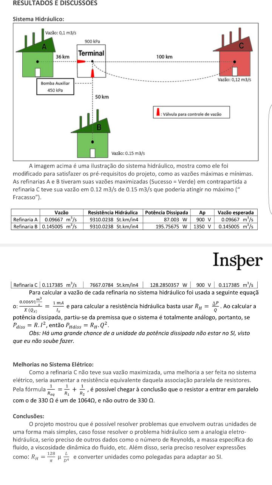

Analogia Sistema hidráulico - Sistema elétrico

RESUMO DO PROJETO
Neste projeto foi feita uma analogia entre sistemas hidráulicos e sistemas elétricos. Foi preciso solucionar um caso, que buscava otimizar a vazão de um sistema petrolífero, respeitando os limites de maximo e mínimo de vazão das estações.
DATA
Março/2016
CURSO/SEMESTRE
Instrumentação e medição/ 1ºsemestre
DOCUMENTAÇÃO/ESCRITO TÉCNICO/ESCRITA CIENTÍFICA
Sim: Relatório do processo
CONTEÚDO ACADÊMICO
eletrônica, sistema internacional de unidades, elaboração de relatórios acadêmicos, analogia, sistema hidráulico, sistema elétrico.
PALAVRAS-CHAVE
Eletrônica, relatório, sistemas analogos, hidráulica
RELACIONADOS